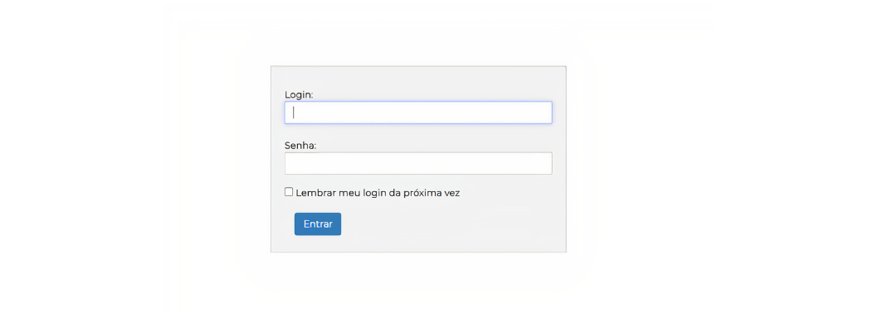
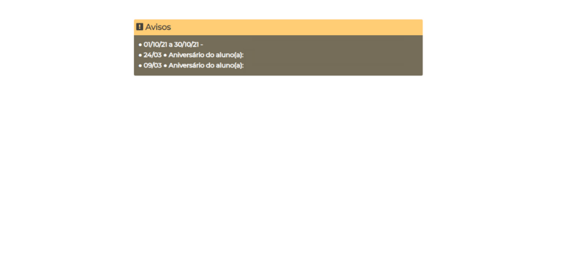
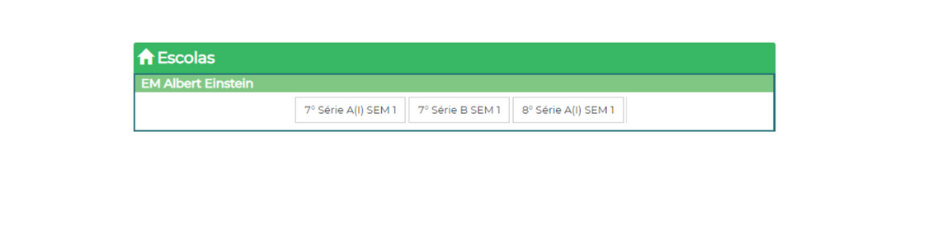
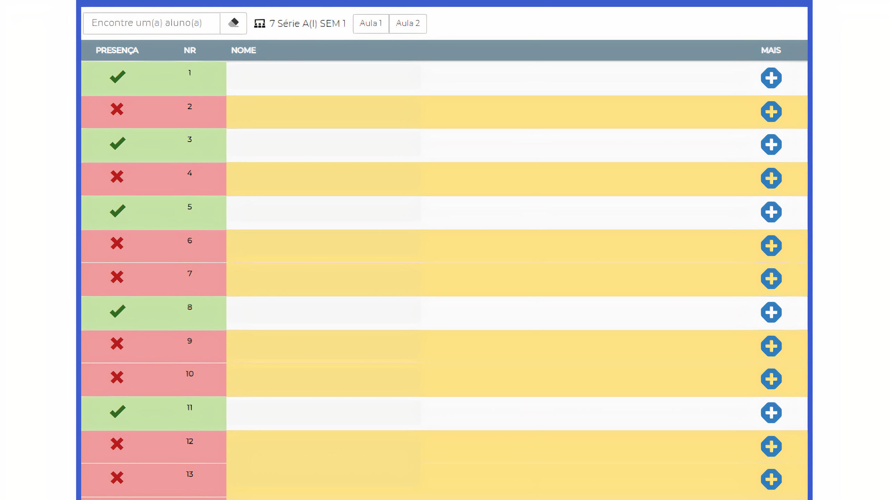
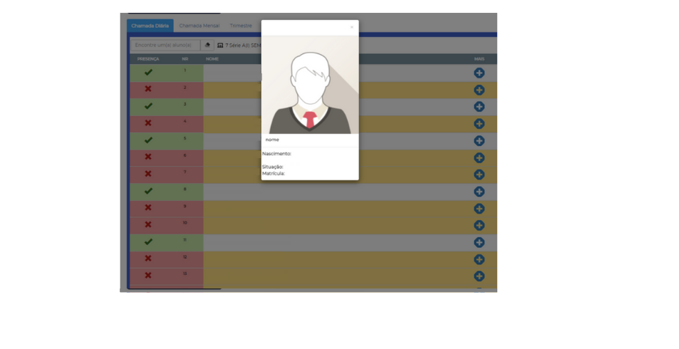

CONFIRA
LOGIN
• Ao acessar o site “Gestão Educação” encontrado no domínio: Gestão Educação
•Em primeira instância seremos apresentados à caixa de pergunta onde devemos inserir o “login”, que nada mais é do que seu nome de usuário cadastrado e cedido pela Seduc, que se configura em forma de 5 caracteres
numerais.
•Após digitar o seu nome de usuário, login, informe a senha que também foi cadastrada previamente.
•Tendo digitado as informações, aperte o botão de cor azul nomeado "Entrar" para fazer acesso ao site.

ÍCONES
O QUE É E COMO FUNCIONA?
Em primeira instância encontramos o ícone com formato de ‘casa’, localizado a esquerda no topo da tela, funcionando como um botão “home”, que ao ser apertado leva o usuário a tela inicial.
O QUE É E COMO FUNCIONA?
Em segunda instância, localizado ao lado do botão 'home' encontramos o ícone com formato de ‘aluno’ funcionando
como um botão “menu principal”, onde ao ser apertado
leva o usuário ao menu de avisos, chamadas e turmas.
AVISOS
• Ao acessar o botão “Menu Principal”, localizado ao topo da tela em formato de 'aluno', somos apresentados
para um calendário com as próximas datas de interesse, por exemplo, datas de aniversário dos alunos ou dos docentes, tanto como visitas de setores internos.
O calendário “avisos” não é interativo.

CHAMADAS
TURMAS:
• A aba nomeada como “Turmas” é onde se encontram as informações da área de atuação do
docente, por exemplo, em que turmas/escolas ele está designado.
• Caso o usuário deseje um detalhamento, ou seja, mais informações de cada turma
ele pode apertar em seus respectivos nomes, como "Oitavo ano B", e será encaminhado para
uma tela com os respectivos nomes de todos alunos matriculados à ela.
CHAMADA DIÁRIA
O QUE É E COMO FUNCIONA?
Ao escolher a turma em que se deseja fazer a chamada, lembrando que essa escolha deve ser feita previamente na aba “turmas” ao clicar na respectiva que desejas. Após uma rápida verificação ao topo da chamada se a turma é a que foi selecionada o docente deve escolher a qual aula aquela chamada é referente, sendo as únicas opções possíveis “Aula 1” e “Aula 2”; se deve pressionar em cima da opção que se aplica melhor a nescessidade. Ao iniciar a chamada pela primeira vez todos os alunos terão um “X” a esquerda do nome, isso é modificável por apenas um clique(apertar em cima do X), que se tornará um sinal de correto, indicando que o aluno está de fato presente naquela aula
CHAMADA MENSAL
O QUE É E COMO FUNCIONA?
• Onde o educador/docente pode detalhadamente as informações, referentes as presenças e faltas, de todo
mês de
uma turma(lembrando que a turma tem que ser selecionada anteriormente na aba “turmas”).
• É possivel o acesso à todos os meses do ano e a possibilidade de alteração de todas as faltas
e presenças de um aluno ao longo do ano escolar.

DETALHAMENTO
O QUE É E COMO FUNCIONA?
Para o acessar basta pressionar o botão com um símbolo de "+" ao lado direito do nome do
aluno na Chamada Diária, que será aberta uma tela com informações pessoais do mesmo, sendo elas:
Número de matrícula, foto, situação e data de nascimento.
 SENHA
APRENDA A TROCAR SUA SENHA:
• Acesse a opção no botão localizado a direita ao topo da tela:
 • Digite sua senha atual, que foi definida previamente em seu cadastro.
• Digite sua senha atual, que foi definida previamente em seu cadastro.
• Digite o que você deseja que se torne sua nova senha, repita esse processo
e clique em "salvar alteração".

• Acesse a opção no botão localizado a direita ao topo da tela:
• Digite sua senha atual, que foi definida previamente em seu cadastro.
• Digite o que você deseja que se torne sua nova senha, repita esse processo
e clique em "salvar alteração".